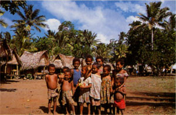

|
第６７ 原住民と狩猟を楽しむ
 昭和２０年６月×日。１２、３歳のまだ若い二人の少年を連れて、アブス カイカイ（食料用鳥肉調達）の為に、狩猟 に出かけたことが有りました。ジャングルの中は鬱蒼と茂った森林ですから、色々の鳥が沢山居ます。なかでも赤や緑色 をした色鮮やかなインコが木の葉に隠れて遊んでいる様を見たときは、極楽浄土に来たのではないかと錯覚するほどでし た。森の中は森閑として、聞えてくるものは小鳥のさえづる音だけでした。そんな森の中を歩いていたら、少年達が、素 早く木の葉の間に、獲物を見つけ、息を殺し低い声で『キャプテン、あそこに鳥がいる』と、指をさす。何処だ！と声を出したのがいけなかった。鳥はバタバタと羽音を残し 飛んで行ってしまった。すると、少年たちは 『キャプテン ノーグッド』と、言って不満そうでした。そんな事も有ったが、それから間もなく高い木に止まっている オームを見つけました。一羽のオームはこちらに気付いていない。三八式騎兵銃でそのオームを見事に撃ちとったが、バ タバタと羽ばたきながらジャングルの奥深く落ちて行き見えなくなってしまいました。折角、仕留めたのに駄目か！と諦 めました。ところが、その様を見て取った二人の少年は、オームの後を追って深いジャングルの中に消えていった。やが て彼等は撃ち落としたオームを掴まえて戻ってきました。彼等の動作を見ていると猟犬以上なのに驚嘆しました。 ヤカンジャビンには子供が大勢いました。その中に片目が潰れた独りの子供がいたので清水の次郎長一家の子分、森の 石松にあやかって、この片目の子供を石松と呼び、また、もう一人、頭の良い子がいたので、その子を小政と呼んでいました。 今日は特に利口な小政と石松の２人を連れて、河に魚とりに出かけました。川幅は１４、５メートルほどで、流れも早 くはない、おまけに川底は岩盤でした。水深がそれ程深くない所を見付け、辺りをはばかりながら、隠し持ってきた手榴 弾を、川の流れの真ん中目掛けて投げ込みました。ドーンという鈍い音がした。すると、どうだろう、手応えは十分にあ りました。色とりどりの魚が白い腹を見せて、水面に浮かび上がり、大小様々の魚が静に流れて行く。すかさず我々３人 は夢中になって魚を拾い集めました。ボラの名前は直ぐに分かったが、その外の魚は始めてみる魚ばかりで、名前は分か りませんでした。なかには極彩色の魚もいました。私は腹はすかしていたが、極彩色の魚は毒がある様に思われ、取りま せんでした。気が付いたら、何時の間にか、小政はどこからか薪を沢山集めて来ていました。一方、石松は拳ほどの小石 を集めている。その小石を円形に敷き詰めて並べた。その上に今度は薪を積み重ねた。私には彼等が今から何をするのか？ 全然、見当もつきませんでした。それが終わったら積み上げた薪に火をつけた。河原だったので薪はどーっと燃え上がった。 これを見た瞬間私は 『しまった！これはいかん。危ないッ！』と身の危機を感じました。煙を出したら、敵機に発見される恐れが十分にある からです。しかし、幸いなことに燃え盛る薪から立ち昇る煙は出ませんでしたので、ホッと安堵しました。これなら敵に も味方にも発見される事はないと安心しました。 暫くの間、薪を燃やしてから、頃合を見計らって、少年達は燃え残った薪と灰を取り除いた。下に敷き並べられていた小 石は真っ赤に焼けていて、パチパチと音を立て、火花が出ている。どうするのかな？と見ていたら、先程取った魚をバナナ の葉で包み、真っ赤に焼けている小石の上に置き、その上に、さらに取ってきていた青い木の葉を沢山積み重ねた。その作 業が終わると、さっきから黙って見ている私に、小政が 『キャプテン、暫くそのまま待って下さい』というので、その意味が分からないまま、待ちました。可なりの時間が経って から、さっき、積み重ねた木の葉を取り除き、魚をバナナの葉で包んで居たのを取り出し、小政と石松がバナナの葉を手順 良くほどくと、美味しそうな蒸し焼きの魚が出来上がっていた。私共三人は喚声をあげ、河原の砂の上で、蒸し焼きの魚を 手づかみで、がむしゃらに食べました。実に美味かった。ボラがこんなに美味いとは思ってもいなかった。この時は塩を持 っていなかったので、塩があったらなあ！！もっと美味かったろうにと残念でした。今私どものいる中洲は、物音一つ聞こ えてこない。戦場でありながら静まりかえっていて、真夏の昼下がりの河原での束の間の楽しみでした。 対岸を眺めたら、青い実を沢山つけたパパイア畑があった。川の流れは早くはなかったが、水深が深く危険だと考え、青 い実のなっているパパイア畑に行くことはあきらめました。 今日は良く晴れていました。ここから１００メートル位の上流に、立ち枯れの高さ２０メートルを越すであろうと思われる １本の喬木が有りました。その喬木の梢に近い枯れ枝に白いオームが一羽とまっていた。私どもの居る所から、かなり離れ ているので、オームは我々を全然気にしていない。私もまた、距離があまり遠いので撃つ気になれなかった。 オームの話をします。オームは、隠れて忍び寄ってくる人間の気配を感じ取り、大きな目玉をギョロリとむいて、首をかし げ、木の下に近付いてきた者を覗き警戒する。オームの羽の色は全部白いものと思っていたら、黒オームも居ました。白オー ムより一回り大きい。怒ると、白オームの鶏冠は黄色いが、黒オームの鶏冠は真っ赤で実に美しい。 毎朝８時頃になると、何百羽という白オームが群れをなし、谷間を飛び交います。大自然のドラマが展開され実に壮観な眺 めでした。オームは集団性が非常に強い鳥でした。そこで、木に止まって居るオームをうまく撃ち落としたら、すぐには殺さ ないで、その木の根元で、まだ生きているオームをギャギャと鳴かせると、いったんは、銃声に驚いてその場を飛び去るが、 仲間の泣き声を聞きつけると、また、舞い戻って来ます。そこでまた、さらに、もう１羽オームを仕留めることが出来るとい う寸法です。 一方、初めてオームを食べた時は、臭くて食べられなかったが、食べ物がなくなった今では、その悪臭も気にならなくなっ た。環境になれないと生きていけませんでした。 |